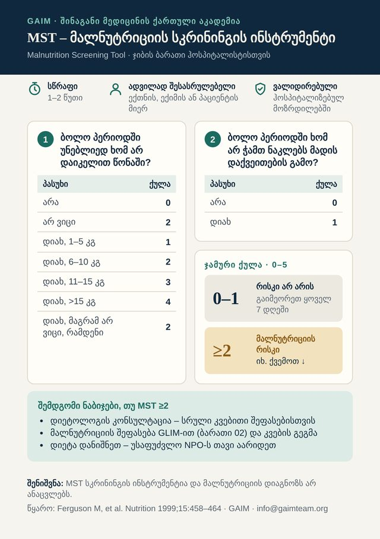
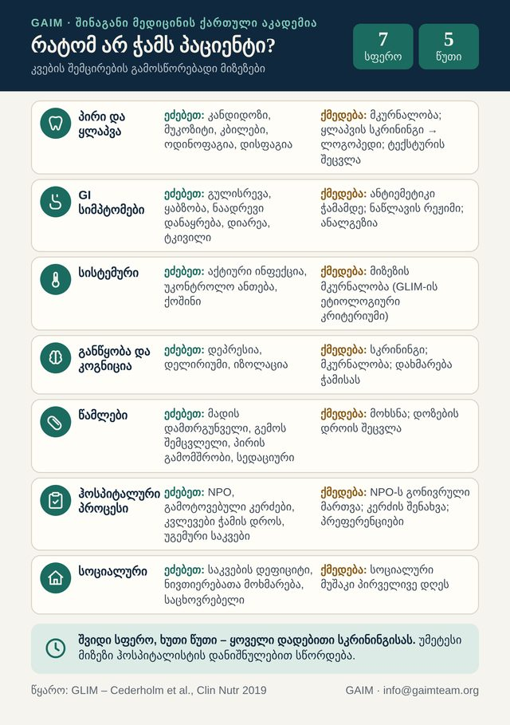
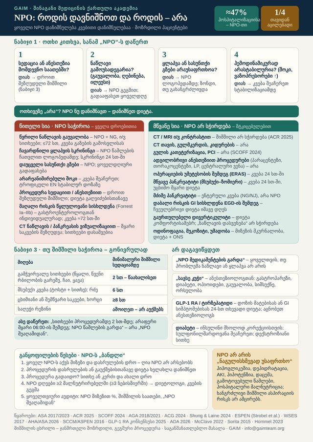
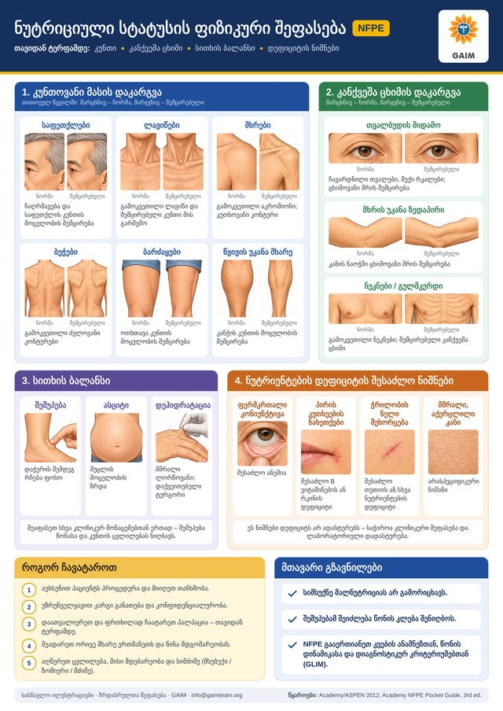

პრაქტიკული ერთგვერდიანი ქარდები და პოსტერები — დასაბეჭდად და ყოველდღიური კლინიკური მუშაობისთვის.
გიზიარებთ GAIM-ის მიერ მომზადებულ პრაქტიკულ ფაქტების ფურცლებს, რომლებიც შეხვედრის დეტალებს აჯამებს. შეხვედრა — „მალნუტრიცია ჰოსპიტალიზებულ ზრდასრულ პაციენტებში: ჰოსპიტალისტის რაკურსი“ (ვალიკო ბეგიაშვილი, MD) — 11 ნოემბერს, მალნუტრიციის კვირეულის ფარგლებში ჩატარდა. ჩანაწერის ნახვა →

MST — მალნუტრიციის სკრინინგის ინსტრუმენტისრული ზომით გახსნა →
რატომ არ ჭამს პაციენტი? კვების შემცირების გამოსწორებადი მიზეზებისრული ზომით გახსნა →
NPO: როდის დავნიშნოთ და როდის — არასრული ზომით გახსნა →
ნუტრიციული სტატუსის ფიზიკური შეფასება (NFPE)სრული ზომით გახსნა →ავტორი: GAIM — შინაგანი მედიცინის ქართული აკადემია. ქარდები ქართულ ენაზეა.